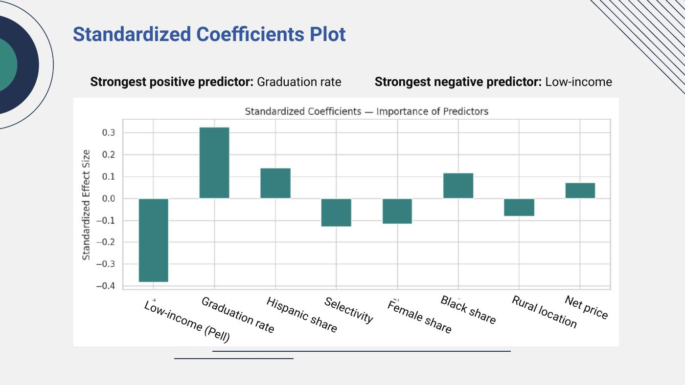
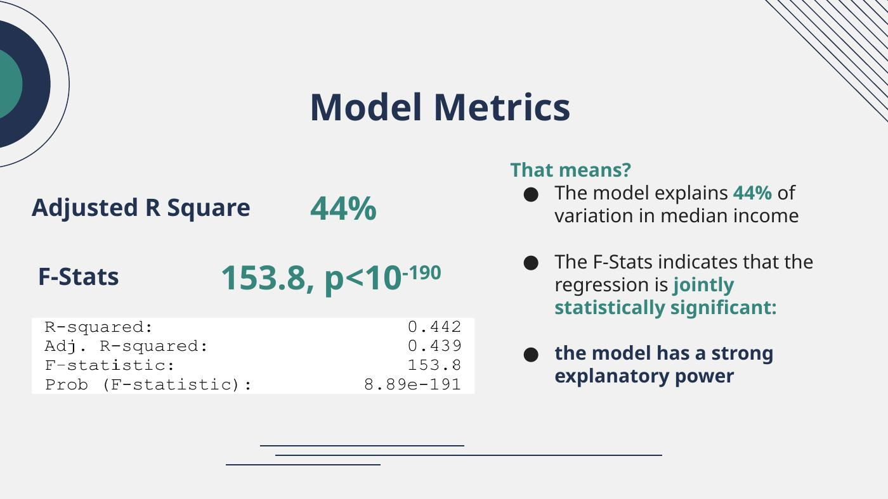

The answer
Institutional characteristics explain meaningful variation in earnings, but the analysis supports association — not causation. Graduation rate was the strongest positive standardized predictor in the project, while low-income/Pell share was the strongest negative predictor.
Why simple correlations are not enough
Gender, race, socioeconomic composition, selectivity, graduation rates, geography, and cost are not randomly distributed across universities. A bivariate comparison can mix these effects together, so the project used multivariable OLS to estimate partial associations while holding selected institutional factors constant.
What the model showed


The most important limitation
Why a business reader should care
The useful insight is not to rank demographic groups. It is to show how strongly institutional outcomes, socioeconomic composition, and school characteristics move together — and why placement statistics should be interpreted in context rather than as a single headline number.
My contribution
My documented responsibility included problem definition, motivation, and research-question framing. The portfolio keeps the unit of analysis at the institution level and avoids turning institutional associations into claims about individuals.